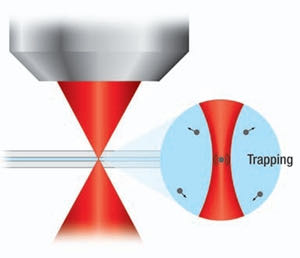

你好，欢迎来到《医学通识50讲》，我是薄世宁。
如果你注意我们每节课的案例，你会发现一个规律。我喜欢用诺贝尔生理学或医学奖项目说明问题。
首先，它权威，其次，它代表了医学研究的风向标。
在我看来，虽然诺贝尔生理学或医学奖一直是为别人的研究颁奖的，但是，它本身也是一座医学的丰碑。
从1901年第一次颁奖到2018年，诺贝尔生理学或医学奖一共颁发109次，中间因为战争暂停过9次。
这节课，我们就通过百年的获奖项目，梳理一下医学的发展方向和趋势。
自然科学的成果为医学所用
先从一个人说起——叫桑卡（Aziz Sancar），他是一名美国遗传学科学家。
你对桑卡不了解，但你一定还记得咱们讲过的“基因修复机制”，也就是人体基因会突变，为了自我保护，人体就会自动修复突变。这个机制在研究衰老、癌症和遗传病方面都有巨大的价值。
桑卡就是发现这个机制的关键人物之一。
有这么突出的贡献，所有人都觉得他肯定能得诺贝尔生理学或医学奖。
2015年10月5日，诺贝尔生理学或医学奖隆重公布，把奖颁发给中国科学家屠呦呦，以及另外两名外国的科学家，表彰他们在寄生虫治疗领域做出的贡献。根本没提名桑卡。
太让人失望了。
两天后，也就是10月7日凌晨5点，桑卡的妻子接到一个电话，然后对桑卡说，这个电话非常重要，要他亲自接。
接到这个电话，桑卡说话都变得语无伦次了。原来是诺贝尔化学奖委员会打来的电话：“桑卡教授，祝贺你，得了今年的诺贝尔化学奖。”
为什么要讲这个故事呢？
所有人都认为，DNA修复肯定是医学，怎么得了化学奖呢？是不是发错了？
没有发错。在我看来，桑卡同时也获得了医学奖。
因为发展到今天，这些顶级研究已经很难完全区分到底算化学、物理，还是医学了。
最开始为了研究的效率，人为地把自然科学分成了不同学科。研究到最后才发现，大家都是在为生命服务。
不论是什么学科，只要是真的技术、科学的理论，都被医学借鉴了。
你肯定注意到了，这节课的题目不是“诺贝尔生理学或医学奖”，而是“诺贝尔奖”。100多年来，有近一半的医学奖都涉及到多个学科。
比如，2018年的物理奖颁给了激光镊子和激光刀。
乍一看属于物理领域，但其实，激光镊子就是用激光“捏住”病毒、细菌、细胞、分子、原子这样的小东西，而且不损伤它们。这个技术给医学研究甚至治疗，打开了无限的空间。

激光刀就是通过改变激光的脉冲和强度，让激光变成刀。
这个技术已经被医学广泛利用，每年有无数次的眼科手术是由最锋利的激光刀完成的，不仅精细，而且创伤小。
物理技术也是为医学所用，难道不能得医学奖吗？
再比如，2018年的化学奖颁给利用生物遗传变异和选择的原理，让微生物制造对人体有益的蛋白质的技术。它的成果用在哪里呢？
还是在医学上。
你可能知道牛皮癣、类风湿关节炎，还有其他自身免疫病，这些病非常难治。现在，有一种抗体药物可以治疗这种病，药的治疗原理就是这个获奖的化学技术。这个技术给无数在痛苦中挣扎的患者，带来了福音。
这到底该算化学，还是医学呢？
很多化学家抱怨，得诺贝尔化学奖的研究都是跟医学相关的，干脆把化学和医学合并算了。
虽然这是句玩笑话，但是毫无疑问，再好的研究必须解决人类的实际问题。
这就是医学发展的第一大特点：医学借鉴了所有科学的精华，所有自然科学的进步，都终将为医学所用。
基础研究推动临床技术的飞跃
我统计了100多年来的医学奖，又发现了另一个特点。
也就是大部分获奖项目都是基础研究，很少有临床项目获奖。只有在早期，有些临床项目还能获奖，但是越到后来越难。
虽然诺奖委员会承诺，以后会增加临床项目的获奖比例，但是我认为不太可能。
这就是医学发展的第二个特点：以病因和机制研究为主的基础医学，始终是医学研究的热点。
具体到诺贝尔奖项，能够获奖的临床项目凤毛麟角，获奖项目大多数都是基础研究。
讲到这里你可能会有疑问：临床技术是能直接用在病人身上的，是直接让病人获益的，为什么不多给这些项目发奖呢？
这么理解就想简单了。
基础研究是人类智慧不断累积和迭代的结果。只要研究透彻，必将带来临床技术的飞跃。
临床项目只是对基础研究的运用，没有一个临床项目会永垂不朽。甚至，临床奖项还有可能发错。
比如，我在《第33讲 氯丙嗪：精神病治疗的第一道曙光》这节课里提到过，1949年的诺贝尔生理学或医学奖，颁给了用脑叶白质切除术治疗重度精神病的项目。后来发现它的副作用太大，病人太痛苦，疗效也不好，这个奖发错了。
但是，只要基础研究越来越深入，对生命的认识就会更透彻，医学的地基就会打得越来越牢，医学这座大厦也就能越建越高。
比如，1946年的获奖项目是，发现用X射线辐射的方法，能够让细胞突变、死亡，这就是基础研究。在它的基础上，发展出了癌症的放射性治疗，简称放疗。放疗就是一项治疗肿瘤的临床项目。
再比如，1971年的获奖项目是，发现激素的作用原理，这也是基础研究。在它的基础上不断深入发展，才有了今天乳腺癌的内分泌治疗，更年期雌激素补充，前列腺癌的激素治疗等等这些临床项目。
还有2008年的获奖项目是，艾滋病病毒的发现，这也是基础研究。找到了病毒，人类才有了后来的逆转录酶抑制剂（NRTI），以及高效抗逆转录病毒治疗的方法。今天的艾滋病病人在强效的抗病毒药物作用下，预期寿命已经接近正常人了。
这就是医学发展的第二大特点：基础研究始终是医学研究的热点。
医学研究越微观，越治本
纵观100年的诺贝尔奖的获奖项目，我认为1962年是个时间节点。
在这一年，诺贝尔生理学或医学奖颁发给了发现DNA双螺旋结构的科学家。虽然，当时获奖人之一詹姆斯·沃森（James Dewey Watson）后来因为发表种族歧视言论，受到了严厉批判，但他的获奖研究还是很靠谱的。
DNA结构的发现，给医学研究从宏观到微观带来了可能。
近20年，75%的诺贝尔生理学或医学奖，颁给了基因和分子层面的微观研究。
比如，人体生物钟的分子机制，证实只有顺应生物节律，别熬夜，才能保持健康的体魄。
再比如，染色体和端粒的研究，证实人类的寿命极限是“写”在染色体上的。
所有这些微观的研究，都为宏观的认知生命和疾病带来了基础。
讲到这里，我和你分享一个令人激动的病例。
急性淋巴细胞性白血病是儿童白血病的一种常见类型。在以前，治疗主要靠化疗。
尽管化疗很痛苦，但是仍然有15%-20%的病例效果不好，会复发。
美国女孩儿艾米丽·怀特海德（Emily Whitehead），就是这样一个反复化疗失败的例子。到了疾病后期，她已经走投无路了。
这个时候，一种叫做CAR-T的免疫疗法出现了。
咱们在前面的课程里说过，CAR-T的原理就是把病人杀肿瘤的T细胞抽出来，在体外进行修饰，加上一个专门寻找癌细胞的“GPS”，然后，把这些加了“导航”的细胞扩增，再回输到艾米丽体内，让它们攻击癌症细胞。
生命垂危的艾米丽，在宾夕法尼亚大学（University of Pennsylvania）医院接受了试验性CAR-T治疗。这是全球第一例接受试验性CAR-T疗法的儿童患者。
治疗一周后，艾米丽从昏迷中醒来。奇迹出现了，她的白血病细胞消失了，至今没有复发。
为什么要讲这个病例呢？
CAR-T治疗是由一系列微观研究促成的。包括癌症基因的研究、免疫细胞的研究、细胞表面受体的研究，以及免疫细胞如何识别癌细胞，这些都是微观研究。
在今天，宏观的可以救命的CAR-T治疗，正是百年来无数微观研究的成果。
思考题
我们经常听到有些“偏方”或者“秘方”声称可以治愈癌症，甚至声称正在申报诺贝尔生理学或医学奖。听了今天的课，你能说说为什么它们不靠谱吗？
欢迎发到留言区，咱们一起互动。
下节课
下节课，我们将进入新的一章，带你认识几位对医学做出巨大贡献的大医生。